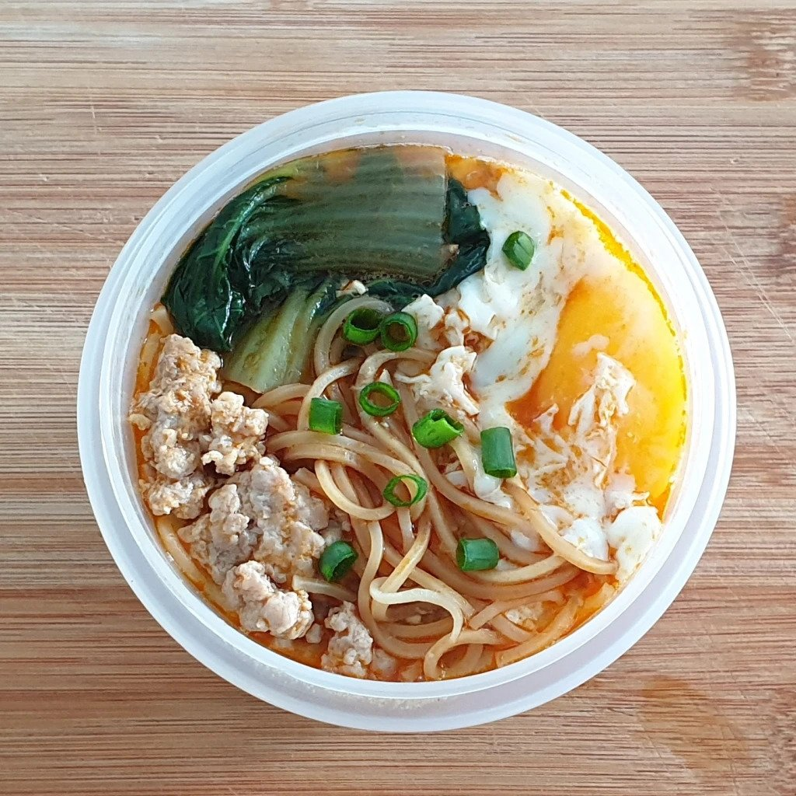

Tom Yum Noodles

A nostalgic comfort food I used to eat frequently as a student.
Ingredients
- 150ml of Chicken Broth
- 1 tsp of Tom Yum Paste
- 60g of dried Ee Mian
- A handful of Bok Choy
- 30g of marinated Minced Pork
- 1 Egg
- 1 tsp of chopped Green Onion
Steps
- To a saucepan, add chicken broth and Tom Yum Paste.
- Using a pair of chopsticks, stir the contents of the saucepan until the Tom Yum Paste is well mixed into the broth
- When the soup begins to boil, lower the heat.
- Add in Ee Mian, Bok Choy, and marinated minced pork.
- Allow the contents of the saucepan to boil for 3 minutes.
- After 3 minutes, crack an egg into the saucepan and allow it boil for another minute.
- When that's done, transfer the Tom Yum Ee Mian into a bowl (be careful with the egg!)
- Garnish with chopped green onions.